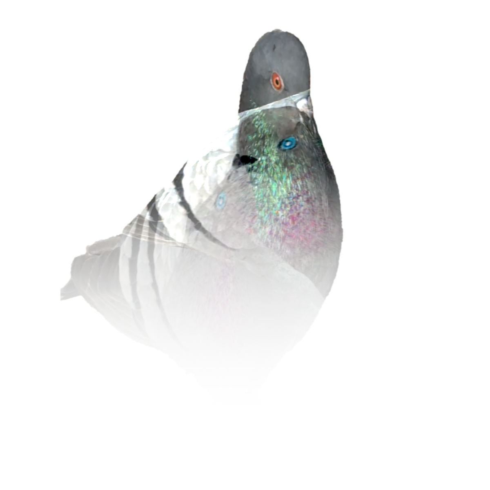

Grey
If you think about the mundane, you might, at some point, think about pigeons. How they're dull, annoying perhaps stupid but, most notably, ubiquitous in any urban environment.
If you had to associate any color with the pigeon, what would it be?
This webpage aims to shifts your perspective and encourage you to appreciate the iridescent beauty of grey.